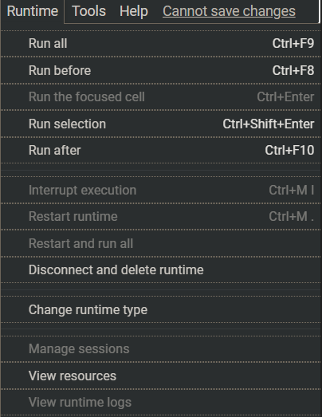
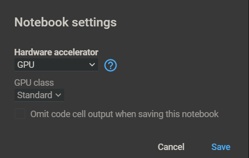
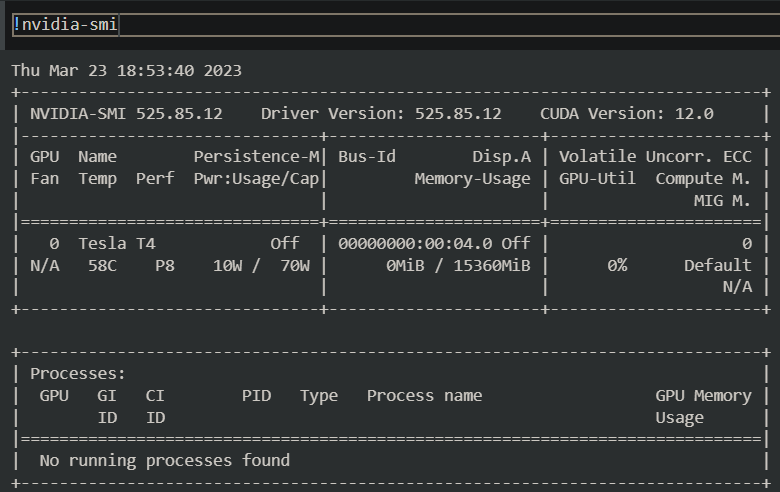

RAPIDS on Google Colab#
Launch notebook#
To get started in Google Colab, click File at the top toolbar to Create new or Upload existing notebook
Set the Runtime#
Click the Runtime dropdown and select Change Runtime Type

Choose GPU for Hardware Accelerator

Check GPU type#
Check the output of !nvidia-smi to make sure you’ve been allocated a Rapids Compatible GPU, i.e [Tesla T4, P4, or P100].

Run RAPIDS install script#
Checks GPU compatibility with RAPIDS, then installs the latest stable versions of RAPIDSAI’s core libraries (cuDF, cuML, cuGraph, and xgboost) using pip.
# Colab warns and provides remediation steps if it's not compatible with RAPIDS.
!git clone https://github.com/rapidsai/rapidsai-csp-utils.git
!python rapidsai-csp-utils/colab/pip-install.py
If you need to install any RAPIDS Extended libraries or the nightly version, you can use the RAPIDS Conda Colab Template notebook and install via conda.
# The <release> options are 'stable' and 'nightly'. Leaving it blank or adding any other words will default to 'stable'.
!python rapidsai-csp-utils/colab/env-check.py
!bash rapidsai-csp-utils/colab/update_gcc.sh
!python rapidsai-csp-utils/colab/install_rapids.py <release> <packages>
Test Rapids#
import cudf
gdf = cudf.DataFrame({"a":[1,2,3],"b":[4,5,6]})
gdf
a b
0 1 4
1 2 5
2 3 6
Next steps#
Check out this guide for an overview of how to access and work with your own datasets in Colab.
For more RAPIDS examples, check out our RAPIDS notebooks and notebooks-contrib repos